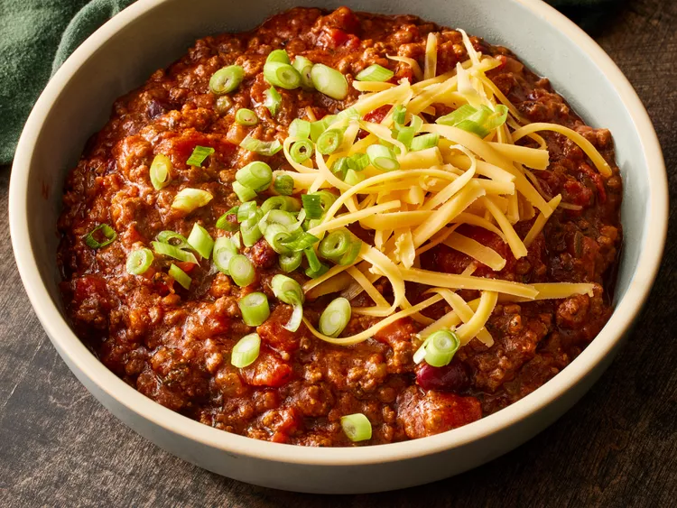

Chili con Carne

Warming Chili con Carne
Leave this chili to simmer slowly for an hour (or more) and experience the rich flavours dance on your palate.
Perfec when served with rice!
Ingredients
- Green bell pepper, chopped
- Yellow onion, chopped
- Lean ground beef
- Red wine
- Beef stock cubes
- Whole peeled tomatoes (from can)
- Tomato paste
- Garlic, crushed
- Dried parsley
- Dried basil
- Chili powder (as much or as little as you like)
- Paprika
- Cayenne pepper
- Dried oregano
- Salt and pepper to taste
- Canned kidney beans
Method
- Heat oil in a pan, add green peppers and onions until softened
- Add ground beef and cook until browned
- Stir in wine and stock cubes, mixing well
- Stir in chopped tomatoes, tomato paste and garlic. Season to your liking with oregano, parsley, basil, chili powder, cayenne pepper, paprika, salt and pepper
- Bring to boil, reduce the heat to low, then let simmer ,covered, for 60 minutes or more, stirring occasionally (add some more red wine if it becomes too dry)
- 20 minutes before serving stir in the kidney beans (and add more wine if needed)
- Best served with rice! Bon appetit!